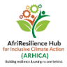

teams & department leads
core managerial · tier III · lead images & names
CORE MANAGERIAL & LEADS
Programs & Technical
team lead
Dr. Fatima Mbeki
- Program Manager – Climate Justice & Adaptation
- Program Manager – Inclusive Food Systems
- Program Manager – Disability Inclusion & Social Protection
- Research & Policy Lead
- MEL Manager
- Program Officers / Project Officers
Finance & Administration
team lead
James Omondi, CPA
- Finance Manager
- Accountant
- Procurement & Logistics Officer
- Administrative Officer
- Office Assistant
HR & Safeguarding

team lead
Eunice Akinyi
- Human Resource Manager
- HR Officer
- Safeguarding & Child Protection Officer
- Gender & Disability Inclusion Officer
- Staff Welfare Officer
Partnerships & Comms

team lead
Mr.Felix Otieno Opiyo
- Partnerships & Donor Relations Manager
- Grants & Proposal Development Officer
- Communications & Advocacy Officer
- Digital Media & Knowledge Management Officer
TIER III: OPERATIONS & FIELD
📋 Program & Project Delivery
- Project Coordinator (per project)
- Field Program Officers
- Community Mobilizers
- Extension / Technical Officers (Climate, Agriculture, Inclusion)
🔬 Research, Data & Learning
- Field Researchers / Enumerators
- Data Officers
- Community Learning Facilitators
🚚 Support & Logistics
- Transport & Fleet Officer
- Storekeeper
- ICT / Systems Support Officer
🛡️ Security & Facilities
- Security Supervisor
- Security Guards
- Caretaker / Groundskeeper
- Cleaner
strategic: board & senior
operational insights flow
up
learning & adaptation